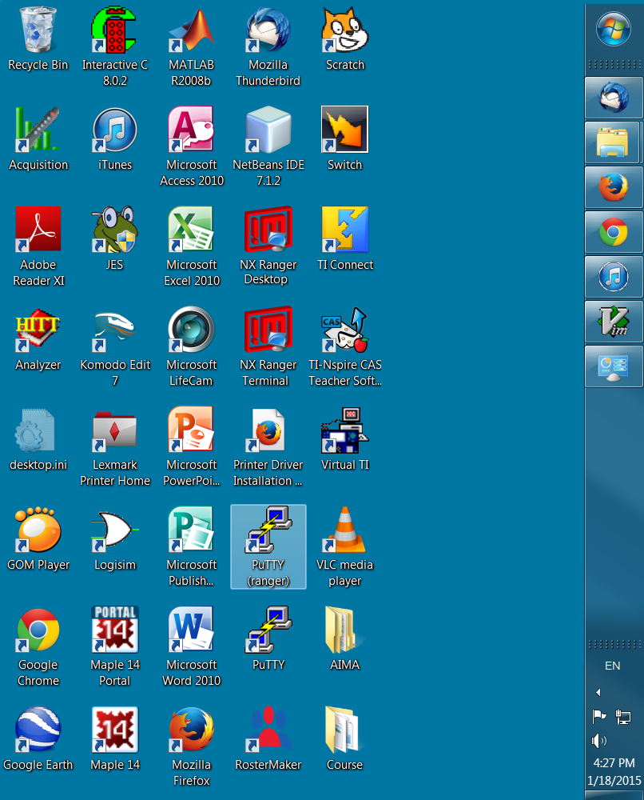
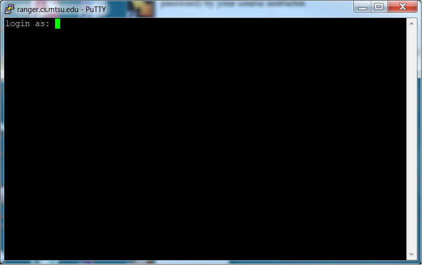
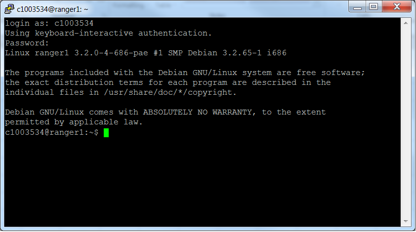
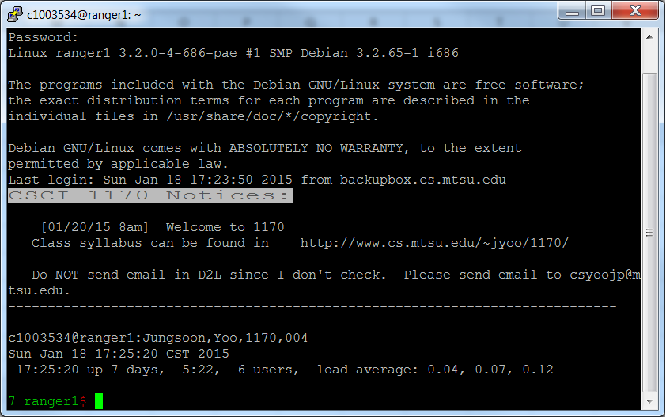

Lab 1 -- First access of your account
Objectives:
- Learn how to log on to the server.
- Customize your account.
Sections:
- Introduction
- Customizing Your Account with PuTTy
- Logging On to the Server using NX
- Wrap-Up
Introduction
In today's lab,
we will learn how to log on to our account on ranger using two terminal software, PuTTy and NX,
and we will do a one-time customization of the account to make it easier to work with.
Customizing Your Account with PuTTy
The computer system you will use for CSCI 2170 is named ranger.
(Actually, ranger is an umbrella name for several actual machines, such as ranger1 or ranger2.
Because it doesn't matter which particular ranger machine you are using, we'll just say ranger.)
Ranger runs the UNIX operating system, an extremely powerful and popular system.
(There are different "dialects" of UNIX,
such as Mac OS X or HP-UX.
The UNIX dialect running on ranger is called Linux.)
Unlike a small personal computer that you physically handle to use, ranger is a server that
we will use via a network connection. This lab will demonstrate two methods of connecting to ranger;
PuTTy and NX Ranger Desktop which uses remote X Window System connections.
PyTTy provides a text-based terminal not X-based.
As part of this lab, you will also do a one-time customization of your course computer account
for future labs.
DIRECTIONS: Follow the instructions and perform the actions indicated as they appear in the text.
To do this lab, you will first need to have been given your C-number (and corresponding password) by your course instructor.
Step 1: Log on to ranger using PuTTy
To connect to ranger from anywhere, you need to use a terminal software. We will use PuTTy for this step. Locate the PuTTy (ranger) icon in the desktop as shown in the following figure.

You should double click on the PuTTy(ranger) icon.
You will then see a login screen such as the following.

Your instructor has given you a course account, that is, a pair of codes
(username and password) that you will use to access ranger.
Enter your course account's 8 character login username; for example, c1055913.
When it prompt for "Password:",
enter your course account's password; for example aB2W45.
You won't see anything while you type your password. Just hit the enter key when you are done typing.
Note: UNIX is case-sensitive,
that is, it distinguishes between upper and lower case letters.
It is important to type the information exactly as indicated.
If you make any typing error, you will get an error message as following:
Access denied
Using keyboard-interactive authentication.
Password:
If you made typing error on password, you can re-enter the Password information.
However, if you have entered an incorrect username, you must close the window by clicking
on the closed button (the red X button on the right top corner of the window),
and restart the PuTTy(ranger) window.
Once you successfully log on to the server, you may get a screen as below:

Step 2: Customize your account
Much of UNIX is "command driven"; that's a fancy way of saying
that to get most things done, you type out command instructions
inside a Terminal window instead of clicking on icons.
UNIX is case-sensitive,
that is, it distinguishes between upper and lower case letters.
It is important to type the commands exactly as indicated.
Failing to put in a space where required is an error; however
when a space is required, the amount of space (i.e., the number of blanks)
is usually not critical.
The Computer Science department has created software that will
customize your account so that it is suitable to use for this course.
The following customization should only be done once.
You will never need to customize this account again.
The customization command is as follows:
$
~cs/customize 2170 cen
-
In the PuTTy Terminal window, at the $ prompt,
enter the customize line exactly as show above.
(Do NOT enter the dollar sign as part of your
command. It is meant to represent the prompt provided by the system.)
-
The customization will ask you for your first (personal/nickname)
name and last (family) name. Use mixed-case in entering your names;
for example, enter "John" and not "john" or "JOHN". Next you will
be asked for your PipelineMT user name. (You will NOT be asked
for your PipelineMT password.) Lastly you must enter the 3-digit
course section number.
-
If there are any errors, please review what you have done and
start over at step 1.
Otherwise, close the terminal window by typing "exit".
-
Now open up a PuTTy Terminal window again.
If your prompt now is of the form "ranger$",
everything is OK. If not, please check with the instructor as
to what might have gone wrong.
You should see a window similar to the following figure.

- Once you are done, you will need to log off ranger by typing "exit".